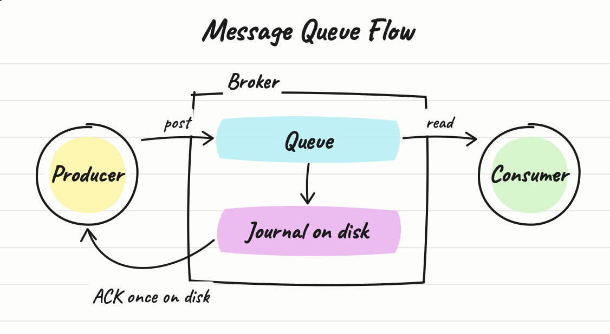
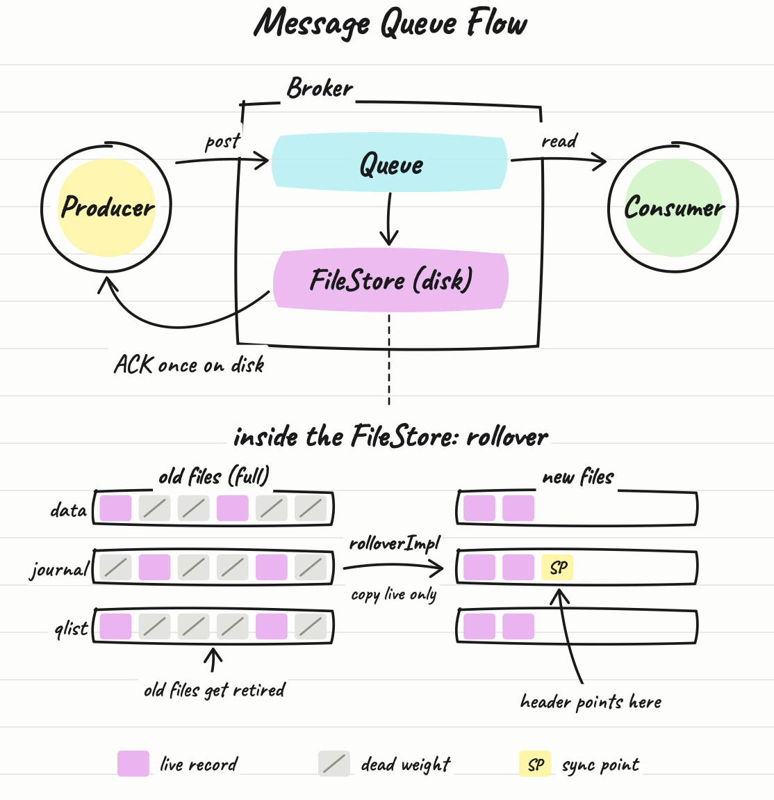

// why i looked at it
As funny as it sounds, I have thought message queues were cool ever since my second summer at Microsoft. My project had a scaling problem: work was arriving faster than the service could process it, and the fix was to put an Azure Queue Storage between the two. Producers could keep writing, consumers could drain at their own pace, and a spike in traffic became a backlog instead of an outage. It was the first time I saw a piece of infrastructure change what a system could survive, not just how fast it ran. Since then, anything about making a pipeline faster and more stable has pulled me in.
BlazingMQ is this same idea but taken much further. It's Bloomberg's open-source message queue; written in C++, built for low latency, and running in production at a company whose entire business depends on moving data quickly and without losing it. A queue like this has to acknowledge a message only once it is safe, survive a crash without dropping anything, and do both without adding latency to every message. I learn best from being hands on, so I took the opportunity to build it, run traffic through it, and land a change the maintainers would actually want to merge.
// what blazingmq actually does
Producers post messages to a queue. A broker stores them. Consumers read them back. The broker guarantees that a message it has acknowledged will survive a crash.

That guarantee lives in the storage engine. Each partition of data is backed by a
FileStore, which manages three files on disk: a data file for message
payloads, a journal that records every operation, and a qlist file for queue metadata.
All three are append-only. When a message is confirmed and deleted, its bytes are not
reclaimed; they just sit in the file as dead weight.
Rollover is how the broker deals with that. When the active files fill up,
rolloverImpl creates a fresh set of files and copies over only the records
that are still outstanding. It then appends a sync point and records that sync point's
offset in the new journal's header; a non-zero value there is how crash recovery knows the
rollover finished. Finally, it retires the old files.
// getting it to build
This took longer than the change itself. BlazingMQ builds its two core dependencies from source: BDE, Bloomberg's foundation library, and NTF, their networking library. My laptop had 10GB free, so I moved to Duke's free VM for students and requested an Ubuntu machine: 2 vCPUs, 4GB of RAM, and two volumes of roughly 18GB each. Neither volume alone could hold the dependency build at its peak.
The build script hardcodes make -j 16. On two cores and 4GB of RAM, 16
parallel compiles of template-heavy BDE code will exhaust memory and the build gets
killed. I dropped it to 2 jobs, added a swap file, and pointed the build directory at one
volume while the source and installed libraries lived on the other. The first full build
took around two hours.
bde (~1,700 objects) -> installed into ~/blazingmq/lib64
ntf-core -> installed into ~/blazingmq/lib64
blazingmq (~890 targets) -> broker, tool, unit tests
Then the VM rebooted and /tmp was wiped, taking the entire build directory
with it lol. The installed BDE and NTF libraries survived because they lived in my home
directory. The build script skips any dependency whose build directory contains a
.complete marker, so I recreated those markers, moved the build directory to
/var/tmp so a reboot could not do this again, and rebuilt only BlazingMQ.
Twenty minutes instead of two hours.
Once it built, I started a single-node broker and pushed a message through it with
bmqtool. Open a queue, post a payload, wait for the ACK.

// choosing what to touch
A maintainer had opened issue #1727 listing the ten longest functions in the codebase. Length alone is not a good way to pick one. A 1,600-line function that is a flat sequence of steps can be easier to refactor safely than a 300-line function full of locks and early returns. So I filtered on two things instead: whether the function had unit test coverage, and how tangled its control flow was.
Half the list had no unit test file at all. That ruled them out; refactoring code nothing
can check is guessing. Of the rest, most were dense with branches and early returns.
FileStore::rolloverImpl, tenth on the list at 325 lines, had 1,900 lines of
tests beside it, including a case that runs rollover end to end and checks that the new
journal is well formed. It had two return statements, no locks, and ran on a single
dispatcher thread by contract. Reading it top to bottom, it broke into clear phases:
rolloverImpl()
-> create() new data/journal/qlist files; only failure point
-> writeRolledOverRecord() loop copy outstanding records, tally per-queue counts
-> log queue summary sort queues by bytes, print table
-> write first sync point copy last sync point, update offsets, set header
-> log compaction metrics new/old file sizes
-> truncate, gc, swap retire old file set, install new one
Two things shaped what I did next. The header documented that rolloverImpl
has no side effect on failure; the only early return had to stay ahead of any state
change. And a maintainer had recently split the shutdown path in another file by
extracting a block into a private helper. That helped me figure out the pattern and
conventions the codebase already accepted.
// what i changed
I extracted the two logging phases into private helpers,
logQueueRolloverSummary and logCompactionMetrics, and marked
both const. They only read state and write to the log, and const
makes the compiler enforce that, which is great because a reviewer doesn't have to trust
me that they cannot touch the store. I also extracted the record-copy loop.
I deliberately left the sync-point write inline. It sets an offset in the new journal's header, and a non-zero value there is the on-disk signal that rollover completed. The code comments say it must be the last operation. Moving it into a helper would not have made it wrong, but it would have made the ordering constraint easier to miss.
// the review and my final change
The maintainer's feedback was overall pretty good, with just one comment: the record-copy helper was just a single for loop, and giving it its own function was over-engineering. He was right; to be honest, I had added that just to try and make the function even shorter. A one-loop helper hides three lines behind a name and adds a hop for the reader, which defeats the purpose of the refactor in the first place. I inlined it back and kept the two logging helpers. Afterwards, the tests passed locally, and the PR was merged!
// what i took from it
Picking the target mattered more than the change. I chose rolloverImpl
because it had tests and simple control flow, and everything after that was easier
because the tests could tell me when I was wrong.
Run the tests before touching anything. My first failure was a stale scratch directory, not my code; if I had edited first, I would have blamed the refactor.
Extract less than you think. The helper the maintainer rejected was the one I added only to make the function shorter.
I also profiled the broker under load, but that is its own write-up…